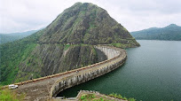

Main Attractions
Idiukki Dam

The Idukki Dam, located in Kerala, India, is a 168.91 m (554 ft) tall arch dam. The dam stands between the two mountains – Kuravanmala (839)m and Kurathimala (925)m. It was constructed and is owned by the Kerala State Electricity Board. It supports a 780 MW hydroelectric power station.
It is built on the Periyar River, in the ravine between the Kuravan and Kurathi Hills in Kerala, India. At 167.68 metres, it is one of the highest arch dams in Asia and third tallest arch dam. It started generating power on 4 October 1975.[1] Technically, the dam type is a concrete double curvature parabolic, thin arc dam.